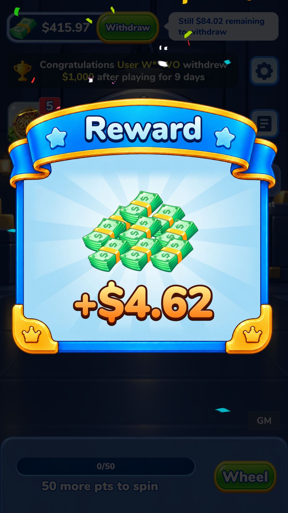
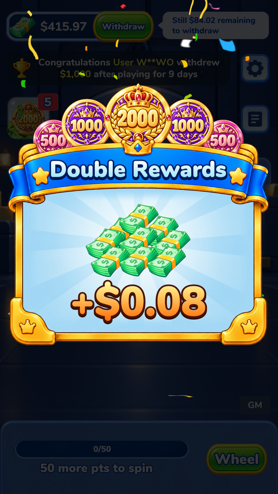

<!doctype html><html lang="zh-CN"><meta charset="utf-8"><meta name="viewport" content="width=device-width,initial-scale=1"><title>奖励弹窗 · 比例与动效</title><style>*{box-sizing:border-box}body{margin:0;background:#07162f;color:#eaf6ff;font:16px system-ui,sans-serif}header,main,footer{max-width:1100px;margin:auto;padding:24px}h1{font-size:30px}p{color:#bbd0ec;line-height:1.7}nav{display:flex;gap:10px;flex-wrap:wrap}button,a{color:#91dcff}button{padding:10px 16px;border:1px solid #5584b2;border-radius:15px;background:#173458;cursor:pointer}button.active{background:#d0ee79;color:#152a21}main{display:grid;grid-template-columns:1fr 1fr;gap:24px}article{background:#112747;border:1px solid #2e4a73;border-radius:18px;padding:16px}img{width:100%;display:block;border-radius:10px}h2{font-size:20px}@media(max-width:600px){main{grid-template-columns:1fr}}</style><header><h1>奖励弹窗：按参考图等比显示</h1><p>普通奖励与双倍奖励均使用参考图的 1:1 画布比例。以下是 Unity 实际运行截图；切换光效帧可核对转动，钞票与边框保持固定。</p><nav><button class="active" data-height="1920">1080 × 1920</button><button data-height="2340">1080 × 2340</button><button data-frame="0">光效 0 秒</button><button class="active" data-frame="018">光效 0.18 秒</button></nav></header><main><article><h2>普通奖励</h2><a href="Screenshots/normal_light_018_1920.png" target="_blank"></a></article><article><h2>双倍奖励</h2><a href="Screenshots/double_light_018_1920.png" target="_blank"></a></article></main><footer><p>原版参数：光效顺时针 4 秒一圈；提现提示框 4 秒完成一次上下浮动。余额达到 500 后隐藏。<a href="verification.json">验证记录</a> · <a href="Screenshots/hint_peak_1920.png">提示框最高位置</a> · <a href="Screenshots/hint_low_1920.png">最低位置</a></p><p>已应用当前场景与预制体，未打包或安装 MuMu。</p></footer><script>let height='1920',frame='018';function refresh(){document.querySelectorAll('img[data-kind]').forEach(i=>{i.src='Screenshots/'+i.dataset.kind+'_light_'+frame+'_'+height+'.png';i.parentElement.href=i.src})}document.querySelectorAll('button[data-height]').forEach(b=>b.onclick=()=>{height=b.dataset.height;document.querySelectorAll('button[data-height]').forEach(x=>x.classList.toggle('active',x===b));refresh()});document.querySelectorAll('button[data-frame]').forEach(b=>b.onclick=()=>{frame=b.dataset.frame;document.querySelectorAll('button[data-frame]').forEach(x=>x.classList.toggle('active',x===b));refresh()})</script></html>